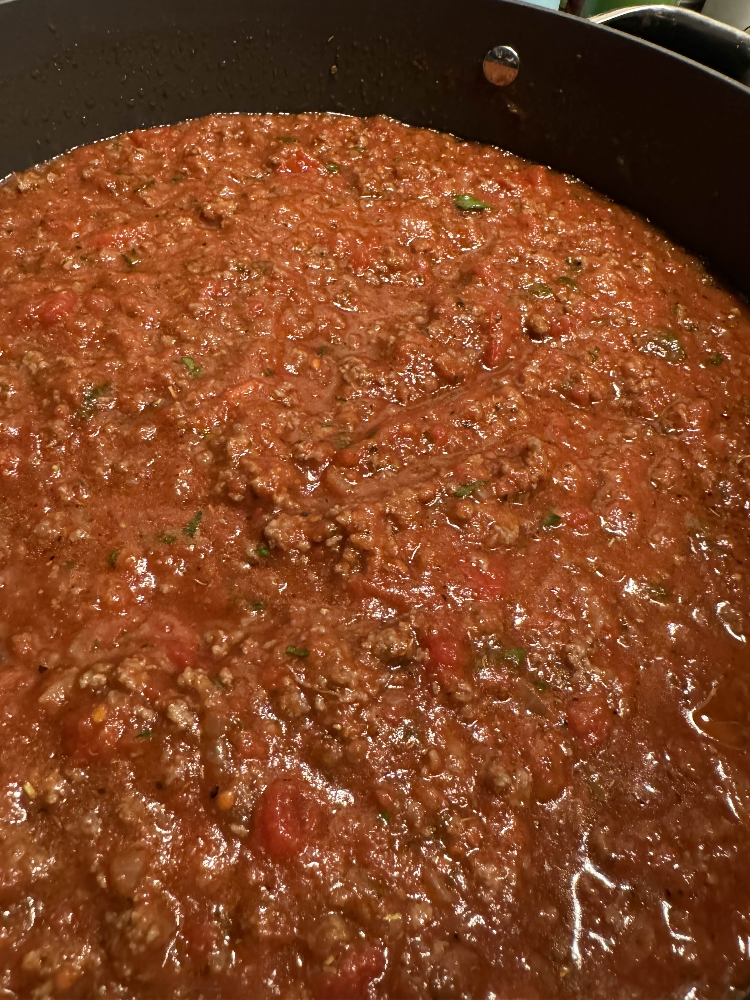
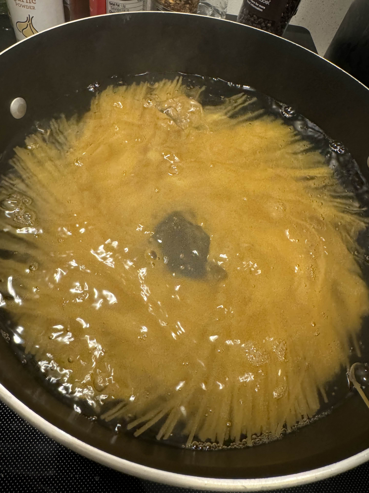

This recipe for Quick Spaghetti Ragu is a Classic, Hearty Pasta Dish That’s Perfect for a quick and easy weeknight meal.
Prep Time: 5 minutes, Cook Time: 20 minutes, Servings: 4, Cost: 15 - 20 USD
Few dishes can rival the comforting, hearty appeal of a classic spaghetti dinner. My Classic Spaghetti with Beef & Tomato Sauce is a simple yet delicious recipe that’s perfect for any night of the week. It’s packed with rich flavors, from the tender ground beef to the savory tomato sauce, and is sure to become a family favorite.
Why You’ll Love This Recipe
This spaghetti dish is the epitome of comfort food. The ground beef adds a satisfying protein component, while the combination of crushed tomatoes and tomato sauce creates a rich, flavorful base. The dish is seasoned with classic Italian herbs and spices, making every bite a perfect blend of savory and tangy. Plus, it’s easy to make and ready in no time, making it a go-to for busy weeknights.
Ingredients You’ll Need:
- 1⁄4 diced onion
- Olive oil (for cooking)
- 1 lb ground beef
- Salt, pepper, and garlic powder (to taste)
- 1 can crushed tomatoes
- 1 can tomato sauce
- Italian seasoning (to taste)
- Oregano (to taste)
- Sugar (to taste)
- 1 lb thin spaghetti noodles
- Freshly chopped parsley (for garnish)
- Parmesan cheese (for garnish)
- Crushed red pepper flakes (for garnish)
Step-by-Step Instructions:
Follow these simple steps to create a delicious quick and easy Spaghetti Ragu that will have your family asking for seconds:
Making the Sauce

Prep the Onion
Start by dicing up 1⁄4 of an onion and setting it aside. The onion will add a sweet, aromatic flavor to the sauce, forming the base of your dish.
Sauté the Onion
Heat a drizzle of olive oil in a large pan over medium heat. Once the oil is hot, add the diced onion to the pan. Cook the onion until it becomes soft and slightly browned, releasing its natural sweetness and aroma.
Cook the Ground Beef
Next, add 1 pound of ground beef to the pan with the softened onion. Season the beef with salt, pepper, and garlic powder to taste. Cook the beef, breaking it up into small pieces as it browns, ensuring it cooks evenly.
Drain the Grease
Once the beef is fully cooked, use a paper towel to carefully remove any excess grease from the pan. This step helps to keep the sauce from becoming too oily, allowing the flavors to shine through.
Add the Tomatoes
Pour in 1 can of crushed tomatoes and 1 can of tomato sauce. These ingredients will create a rich, hearty base for your sauce, full of tangy tomato flavor.
Season the Sauce
Season the sauce with Italian seasoning, oregano, salt, pepper, sugar, and garlic powder to taste. Stir everything together to ensure the spices are evenly distributed. Let the sauce simmer on low heat, allowing the flavors to meld together.
Preparing the Spaghetti

While the sauce is simmering, bring a large pot of water to a boil and cook 1 pound of thin spaghetti noodles according to the package instructions. Thin spaghetti is ideal for this dish, as it absorbs the sauce beautifully.
Finishing Touches
Combine and Serve
Once the spaghetti is cooked and drained, serve the beef and tomato sauce over the noodles. The sauce should generously coat the pasta, with plenty of beef in every bite.
Garnish and Enjoy
To finish, garnish the spaghetti with freshly chopped parsley, a sprinkle of parmesan cheese, and a dash of crushed red pepper flakes for a bit of heat. These final touches add freshness, richness, and a slight kick to the dish.
Savor the Flavors of Italy at Home
This Classic Spaghetti with Beef & Tomato Sauce is more than just a meal; it’s a celebration of simple, comforting Italian flavors. It’s the kind of dish that brings warmth and satisfaction to your table, whether you’re cooking for yourself or feeding a crowd.
With its rich tomato sauce, tender beef, and perfectly cooked spaghetti, this recipe is sure to become a staple in your kitchen. So why not make it tonight? Your taste buds will thank you!